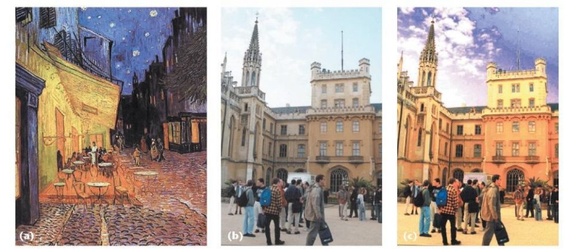

Data publicării: 15.01.2018
Autor articol: Anca Ignat
Una din caracteristicile cele mai importante ale unei imagini este culoarea și prin urmare tehnicile de procesare a conținutului de culoare sunt foarte des utilizate. Conținutul de culoare al unei imagini furnizează informații semnificative pentru operații precum analiza imaginilor, clasificarea, segmentarea, recunoașterea diverselor obiecte, recuperarea informației, prelucrarea imaginilor digitale medicale, etc. Transferul de culoare este una din tehnicile cele mai populare în procesarea imaginilor color și presupune schimbarea/alterarea culorilor din imagine dar în același timp se urmărește păstrarea detaliilor și a conținutului vizual. Realizarea transferului de culoare între imaginea sursă și imaginea țintă trebuie făcută astfel încât să nu apare artefacte datorate diverselor nuanțe de culoare folosite. Un exemplu de transfer de culoare este operația de eliminare a nuanței dominante a unei imagini preluată în condiții de luminozitate proaste [1]-[6].
Vom descrie în continuare o metodă statistică descrisă în [1] pentru a realiza transferul de culoare. Când o imagine color este reprezentată prin unul din modelele clasice ce folosesc trei canale de culoare există inerente corelații între valorile memorate în cele trei matrice. De exemplu, pentru o imagine RGB, marea majoritatea a pixelilor vor avea valori mari pentru componentele roșu și verde dacă canalul albastru are valori mari. Acest lucru implică faptul că, atunci când se dorește schimbarea culorii unui pixel într-un mod coerent, trebuie modificate toate canalele de culoare, fapt ce complică procesul transferului de culoare. Ceea ce se dorește este folosirea unui spațiu de culoare ortogonal dar care să nu prezinte corelare între axe. Ruderman et al. [5] au dezvoltat spațiul de culoare lαβ care minimizează corelația între canale pentru un număr mare de scene din natură. Crearea acestui spațiu de culoare s-a bazat pe ideea ca sistemul vizual al omului este adaptat foarte bine pentru procesarea scenelor naturale. Acest spațiu de culoare are proprietatea că reduce foarte mult corelația între axe, ceea ce face posibilă folosirea prelucrărilor separate pe fiecare canal de culoare în parte fără a apărea artefacte nedorite. O calitate suplimentare a acestui spațiu de culoare este aceea că este logaritmic, schimbări uniforme în intensitatea unui canal tind să fie egal detectabile.
Deoarece marea majoritate a imaginilor sunt codificate folosind spațiul RGB, este de interes modul cum se poate face conversia în ambele sensuri între acest spațiu de culoare și spațiul introdus de Ruderman, lαβ. Ținând cont de faptul că spațiul lαβ este o transformare a spațiului LMS (spațiu de culoare care modelează răspunsul celor trei tipuri de conuri prezente în ochiul uman). Conversia RGB în LMS se realizează în doi pași. Prima etapă este conversia RGB către valorile tristimulus XYZ, care se face o conversie independentă de dispozitiv, care folosește diagrama de cromaticitate și matricea standard a International Telecommunications Union. Se obține următoarea relație de conversie:
[X Y Z]=[0.5141 0.3239 0.1604 0.2651 0.6702 0.0641 0.0241 0.1228 0.8444 ][R G B].
În a doua etapă se realizează trecerea de la valorile tristimulus X, Y, Z la componentele L, M, S folosind relația:
[L M S] = [0.3897 0.6890 -0.0787 -0.2298 1.1834 0.0464 0.0000 0.0000 1.0000 ][X Y Z].
Combinând aceste două relații se obține formula de conversie directă între RGB și LMS, la care, de obicei se aplică logaritmarea:
[L M S] = [0.3811 0.5783 0.0402 0.1967 0.7244 0.0782 0.0241 0.1228 0.8444][R G B], L=log L M=log M S=log S.
Pentru a realiza decorelarea maximă între axe, se poate aplica analiza după componente principale (PCA). Axele principale rezultate având coeficienți aproximativ întregi, Ruderman et al. au sugerat următoarea formă simplă de conversie între spațiile lαβ și LMS:
[l α β] = [1/√3 0 0 0 1/√6 0 0 0 1/√2][1 1 1 1 1 -2 1 -1 0][L M S].
Dacă echivalăm canalul L cu roșu, M cu verde și S cu albastru, din relația de mai sus se observă că putem asocia componenta l ca fiind componenta acromatică iar α și β sunt canalele cromatice galben-albastru și roșu-verde, respectiv. Deoarece transformările vor fi operate în spațiu de culoare decorelat lαβ, este nevoie de relațiile care să realizeze transformarea inversă către RGB. Primul pas este trecerea de la spațiul lαβ la spațiul LMS:
[L M S] = [1 1 1 1 1 -2 1 -1 0][√3/3 0 0 0 √6/6 0 0 0 √2/2][l α β].
Al doilea pas constă în transformarea LMS spre RGB:
[R G B] = [4.4679 -3.5873 0.1193 -1.2186 2.3809 -0.1624 0.0497 -0.2439 1.2045][L M S].
În cele ce urmează, vom descrie un mod de a folosi acest spațiu de culoare astfel încât să se transfere stilul coloristic și afectiv între două imagini. Se dorește ca anumite aspecte ale distribuției punctelor din lαβ să fie transferate între imagini și anume media și deviația standard în fiecare din cele trei axe. Vom nota cu μ(imagine, canal de culoare ) și σ(imagine, canal de culoare) media și respectiv deviația standard în funcție de imagine (s – imaginea sursă, t – imaginea țintă) și componenta de culoare (l, m sau s.
Prima operație este de a transforma canalele de culoare ale imaginii țintă, astfel încât să aibă media 0:
l* = l-μ(t,l) α* = α-μ(t,α) β* = β-μ(t,β).
Apoi se face scalarea componentelor folosind raportul deviațiilor standard:
l’ = σ(t,l)/σ(s,l)l* α’ = σ(t,α)/σ(s,α)α* β’ = σ(t,β)/σ(s,β)β*.
Această transformare face ca datele rezultate au aceeași deviație standard ca imaginea sursă. La final se adaugă acestor valori mediile imaginii sursă.
l1 = l’+μ(s,l) α1 = α’+μ(s,α) β1 = β’+μ(s,β) .
Apoi se face transformarea inversă la spațiul de culoare RGB via LMS și XYZ.
Alegerea imaginilor sursă și țintă poate fi făcută astfel încât să pară incompatibile. Calitatea transferului de culoare depinde de similaritatea în compoziție. Dacă una din imagini are în compoziție mult cer iar cealaltă iarbă, s-ar putea ca transferul să nu funcționeze bine. Acest lucru poate fi remediat, lucrându-se pe porțiuni din cele două imagini, făcându-se transferul între regiunile selectate și puse în corespondență. Un alt mod de a extinde metoda de transfer de culoare prezentată mai sus este considerarea altor măsuri statistice, cum ar fi momentele de ordin superior.

Referințe bibliografice
- Reinhard, E., Adhikhmin, M., Gooch, B., & Shirley, P. (2001). Color transfer between images.IEEE Computer graphics and applications, 21(5), 34-41.
- Liu, C. C. (2012). A global color transfer scheme between images based on multiple regression analysis. International Journal of Innovative Computing, Information and Control, 8(1A), 167-186.
- Xiao, X., & Ma, L. (2006, June). Color transfer in correlated color space. In Proceedings of the 2006 ACM international conference on Virtual reality continuum and its applications (pp. 305-309). ACM.
- Tai, Y. W., Jia, J., & Tang, C. K. (2005, June). Local color transfer via probabilistic segmentation by expectation-maximization. In Computer Vision and Pattern Recognition, 2005. CVPR 2005. IEEE Computer Society Conference on (Vol. 1, pp. 747-754). IEEE.
- Ruderman, D. L., Cronin, T. W., & Chiao, C. C. (1998). Statistics of cone responses to natural images: Implications for visual coding. JOSA A, 15(8), 2036-2045.
- Dhanve, M. A. A., & Chhajed, M. G. J. Review on Color Transfer Between Images. International Journal of Engineering Research and General Science, Volume 2, Issue 6, October-November, 2014.